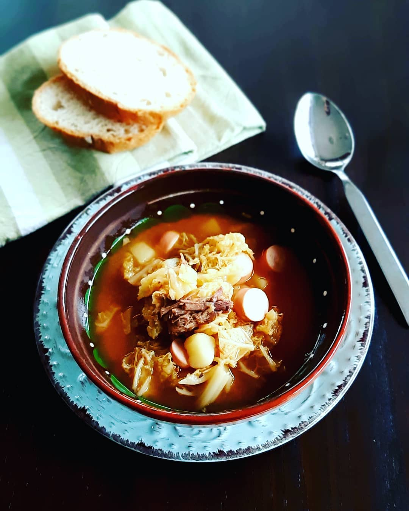

Po dlhej prechadzke tato polievka vyborne zahreje. Ked som bola dieta, mavali sme ju doma casto, a teraz sa ju snazim prepasovat do jedalnicka i mojich deti.
Kelova polievka s parkom
1/2 kg hovadzich kosti s trochou masa (pouzivam rebra)🥩
2 mrkvy🥕
3 petrzleny
1/4 zeleru
1 velka cibula🧅
3 struciky cesnaku🧄
1 hlavka kelu🥬
4 stredne zemiaky🥔
parky
mleta cervena paprika🌶
drveny kmin
sol🧂
Naskor si uvarim vyvar z kosti, mrkvy, petrzlenu, zeleru, cibule a 2 strucikov cesnaku (1 odlozim na zaver). Varim ho v tlakovom hrnci cca 1,5-2 hodiny v zavislosti od mnozstva masa na kostiach. Robim ho viac a cast si dam do misiek zamrazit a neskor mam na rychlu polievku so zeleninou ;)
Vyvar scedim, maso oberiem, zeleninu vyberiem a rozmixujem, vsetku i cibulu, zeler a cesnak. Zemiaky si ocistim a nakrajam nadrobno. Rovnako spravim i s kelom. Do vyvaru dam varit zemiaky. Ked su napoly makke pridam k nim nakrajany kel a rozmixovanu zeleninu z vyvaru. Ak je malo vody trochu jej prilejem. Teraz, ked je vsetko pekne makke uz staci iba ochutit drvenym kminom, pretlacenym strucikom cesnaku, mletou paprikou. Na poslednych 10 minut do polievky hodim i na kolieska nakrajane parky a obrate maso. Ochutim solou a je to ;)
Dobru chut 😘
#mivica_bistro #kel #polievka #kelovapolievka #varimdoma #recept #instafood #soup #meat #cookingathome #colesoup #cabbagesoup
Kelová polievka podľa @mivica_bistro